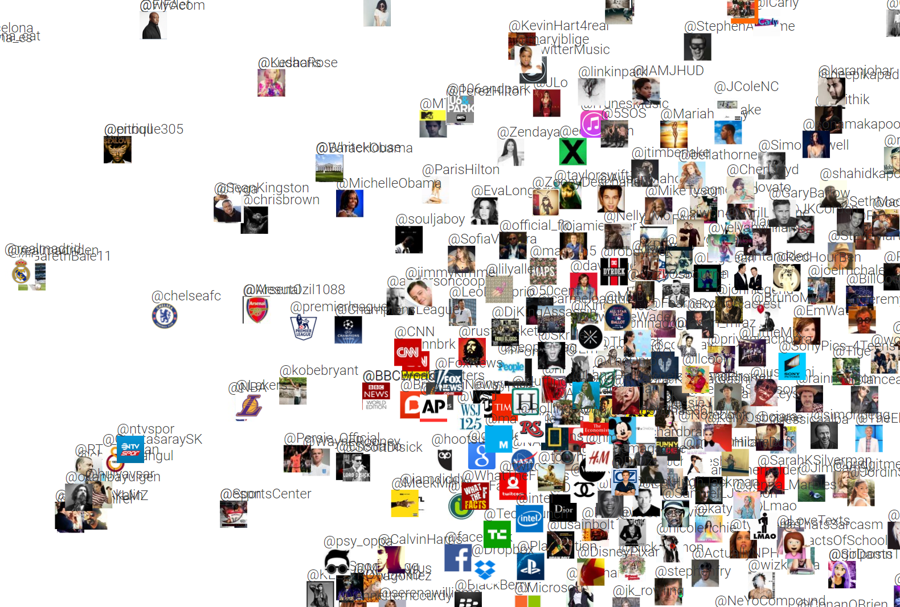

Machine Learning in the Browser
Oliver Zeigermann / @DJCordhose
Wait, but why?
Education: Reach
Tensorflow Playground
Playing with Neural Networks without any installation

Education: Interactivity
PCA Explained Visually
Explorable Explanation of PCA

http://setosa.io/ev/principal-component-analysis/
There are many more interactive explanations here: http://setosa.io/ev
Exploration: Interactivity
tsne.js
Snappy / Offline / Privacy
Keras.js
Running Keras Models in the Browser

https://transcranial.github.io/keras-js
Alternative: https://mil-tokyo.github.io/webdnn/
- https://pair-code.github.io/deeplearnjs/
- https://research.googleblog.com/2017/08/harness-power-of-machine-learning-in.html?m=1